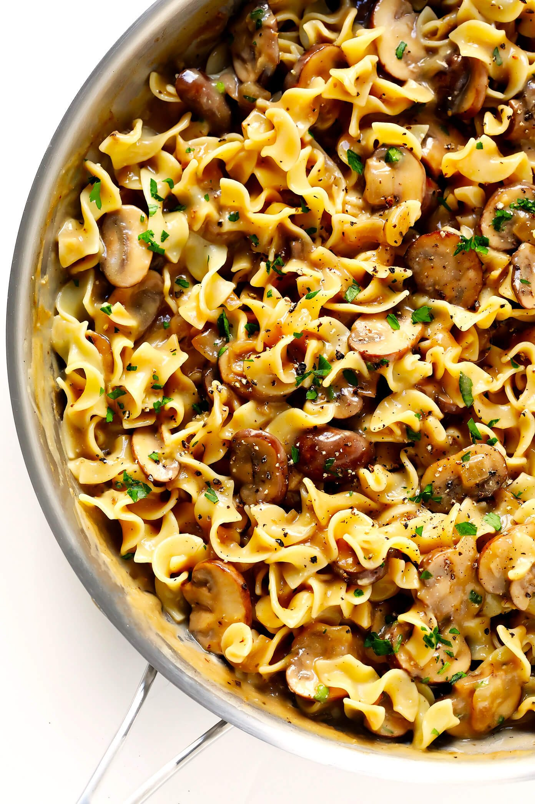

Mushroom Stroganoff

Description
Beef stroganoff popular Russian food dish that is typically made from thinly sliced beef taken from a tender cut of meat,
which is quickly sautéed in butter with sliced mushrooms and onions. The sautéed mixture is then combined with a sour cream
sauce and is most often served over a rice pilaf or noodles.
Mushroom stroganoff is a vegetarian version of beef stroganoff with the same taste.
Ingredients
- 1 pound wide egg noodles
- 3 tablespoons butter, divided
- 1 small white onion, thinly sliced
- 4 cloves garlic, minced
- 1 pound baby bella mushrooms
- 1/2 cup dry white wine
- 1.5 cups vegetable stock
- 1 tablespoon Worcestershire sauce
- 3 1/2 tablespoons flour
- 3 small sprigs of fresh thyme (or 1/4 teaspoon dried thyme)
- 1/2 cup plain Greek yogurt or light sour cream
- Kosher salt and freshly-cracked black pepper
- optional toppings: freshly-grated Parmesan cheese, chopped fresh parsley, extra black pepper
Steps
- Cook egg noodles al dente in boiling, generously-salted water according to package instructions.
(For optimal timing, I recommend actually adding the egg noodles to the boiling water at the same time
that the vegetable stock is added to the stroganoff.)
- Melt 1 tablespoon butter in a large sauté pan over medium-high heat. Add onions and sauté for 5 minutes,
stirring occasionally. Add the remaining 2 tablespoons butter, garlic and mushrooms, and stir to combine.
Continue sautéing for an additional 5-7 minutes, until the mushrooms are cooked and tender. Add the white wine,
and deglaze the pan by using a wooden spoon to scrape the brown bits off the bottom of the pan. Let the sauce
simmer for 3 minutes.
- Meanwhile, in a separate bowl, whisk together the vegetable stock, Worcestershire and flour until smooth.
Pour the vegetable stock mixture into the pan, along with the thyme, and stir to combine. Let the mixture simmer
for an additional 5 minutes, stirring occasionally, until slightly thickened. Then, stir in the Greek yogurt (or sour cream)
evenly into the sauce. Taste, and season with a generous pinch of two of salt and pepper as needed.
- Serve immediately over the egg noodles, garnished with your desired toppings.